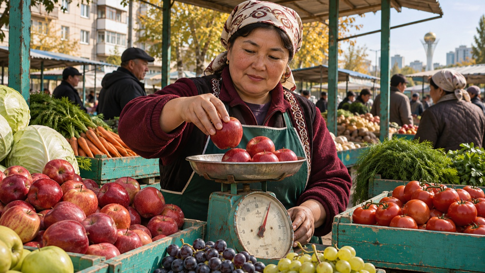

6,2 млн
Қазақстан · Әлеуметтік көмек
Отбасыңыздың балын түсініңіз.
Табыс өзгерсе немесе деректе қате болса, отбасы алатын көмек қалай өзгеруі мүмкін? Өз деректеріңізді тексермес бұрын мысалды қараңыз.

01 / Мәселе
Көмекке кім мұқтаж екенін балл анықтайды
Мәселе — Қазақстанда отбасыларды автоматты балл арқылы бағалау салдарынан олардың әлеуметтік жәрдемақылардан шет қалуы. Мемлекеттік жазба немесе есептелген табыстың шағын өзгерісі отбасын A не B санатына өткізіп, оның кейбір төлемге құқығынан айыруы мүмкін.
Деректерді тексеруге дайындалу
Хабарламадағы табыс кезеңін, отбасы құрамын және тіркелген мүлікті өз құжаттарыңызбен салыстырыңыз. Айырмашылықты, күнін және оны растайтын құжатты жазып алыңыз. Хабарлама берген мекемеден қандай дерек қолданылғанын және оны қалай түзетуге болатынын сұраңыз.

Бала туу жәрдемақысына не сатып алуға болады?
2020 жылғы желтоқсан бағасы
Бағаларды бір деңгейге келтірсек, 2026 жылғы төлемнің сатып алу қабілеті 2021 жылмен салыстырғанда шамамен 15% төмендеген. Күнделікті тауарлар қымбаттаса, отбасының басқа жергілікті кәсіпорындарда жұмсайтын ақшасы азаяды.
Баға мен инфляцияны қарау →Тізілімдегі жазбадан жәрдемақы шешіміне дейін
Мемлекеттік жазбалар
Табыс, жұмыс, отбасы және тіркелген мүлік
Отбасы баллы
Отбасының цифрлық картасы A–E санатын береді
Жәрдемақы алу
A/B санаты кей төлемдерден айыруы мүмкін
Түзету немесе шағым
Отбасы бастапқы деректерді көріп, дауласа ала ма?
≈980 мың
2022 жылы ресми табысы болмаған отбасы
700 млрд ₸
2027 жылға болжанған үнем · ЖІӨ-нің шамамен 0,35%-ы
Бұл кімге әсер етеді және не өзгеріп жатыр?
- B шегіне жақын отбасылар. Балл сатылы өсетіндіктен, табыстың шағын артуы отбасын шектен өткізуі мүмкін.
- Мемлекеттік дерекқорларда толық көрінбейтін отбасылар. Министрліктің 2022 жылғы дерегіне сүйенген БҰҰДБ 5,9 млн отбасының 980 мыңнан астамында ресми табыс болмағанын хабарлады (UNDP Kazakhstan, n.d.). Бейресми табыс тізілімде көрінбеуі мүмкін.
- Жазбалары ескірген отбасылар. Сатылған көлік немесе көшіп кеткен туыс баллды өзгертуі мүмкін. 2026 жылғы қазанда министрлік ОЦК деректерінің толықтығы мен дәлдігі бойынша жаңа қағидаларды бекітті (Zakon.kz, 2026c).
- Ереже өзгеретіндіктен, қамтылған отбасылардың бәріне әсер етеді. Әдістеме 2023 жылы бекітіліп, 2026 жылғы маусымда өзгертілді және 29 қазандағы хабарландырудан кейін қайта қаралды (Informburo.kz, 2026b).
02 / Мәнмәтін және деректер
Мемлекет нені өлшейді және сандар нені көрсетеді?
ОЦК Еңбек министрлігінің 2023 жылғы 29 маусымдағы № 267 бұйрығымен бекітілген, БҰҰДБ-мен бірге әзірленген отбасының (адамның) әлеуметтік әл-ауқатын айқындау әдістемесін қолданады (Zakon.uchet.kz, 2023; Ministry of Labour, 2023). ITU оны Алкайр–Фостердің көпөлшемді кедейлік әдісіне негізделген деп сипаттайды (ITU, n.d.). Баспасөз сегіз саладағы 59 көрсеткішті атайды: табыс пен несие, көлік, жұмыспен қамту, әлеуметтік қорғау, денсаулық, білім, баспана және ауыл шаруашылығы (Azattyq Rýhy, 2026b; Informburo.kz, 2026a). Қосылған және шегерілген баллдардың жиыны санатты анықтайды.
Балл қалай есептеледі?
Табыс, жұмыс, балалар және тіркелген өзге жағдайлар баллды арттырады немесе азайтады.
Табыс +620Жұмыс +300Бала −50Несие −50
Ереженің жарияланған бөліктері
Баллдар 2026 жылғы 29 қазандағы қайта қарауға дейін жарияланған және өзгеруі мүмкін. Бір дереккөз жеті санат, қалғандары бес санат деп көрсетеді (Azattyq Rýhy, 2026a).
Ереженің жарияланған бөліктері1-сурет · Бір теңге отбасының санатын өзгерте алады
₸0
1-сурет. Екі жұмыс істейтін ересек және бір баладан тұратын үлгі отбасының әр табыс деңгейіндегі баллы. Жарияланған ережелер бойынша есеп: Finratings (2026), Azattyq Rýhy (2026a), Digital Business (2026). Күнкөріс минимумы: Kapital.kz (2025).
График деректерін көрсету
Интерактивті бағалау парағы
Отбасының баллын өзіңіз есептеңіз
Жарияланған баллдарға негізделген зерттеу моделі. Мүлік, денсаулық және өзге көрсеткіштердің жарияланбаған бөлшектері есепке алынбаған.
C
650
Балл мәндері баспасөзде жарияланған. Әдістеме ескертпесін қараңыз. Дереккөздер
2-сурет · Инфляция жәрдемақының сатып алу қабілетін төмендетеді
0%20%
2-сурет. Бірінші, екінші немесе үшінші балаға берілетін біржолғы жәрдемақы, атаулы және 2020 жылғы желтоқсан бағасымен. Есеп: 38 × АЕК (CDB.kz, n.d.; Zakon.kz, 2025). Желтоқсаннан желтоқсанға дейінгі инфляция: Bureau of National Statistics (2024, 2026).
График деректерін көрсету
Әдіс: қаңтардағы төлемдер алдыңғы жылдың соңындағы жинақталған тұтыну бағалары индексіне бөлінді. 2022 жылғы сәуірде АЕК-тің 3 180 ₸-ге өсуі графикке кірмеді.
Деректер қай жерде үнсіз?
Ереженің өзі
Дереккөздер дерекқорлар саны (Kapital.kz, 2026; ITU, 2025), көрсеткіштер (Azattyq Rýhy, 2026b; UNDP Kazakhstan, n.d.; ITU, n.d.), төлемдер және санаттар жөнінде әртүрлі мәлімет береді. Отбасыға толық қолданыстағы шкаланы табу қиын.
Бейресми табыс
Қолма-қол төлем немесе шетелде жұмыс істеу тізілімдерде толық көрінбеуі мүмкін.
Жазба қателері
Жоба материалдарында қате жазбалар, түзету өтініштері және сәтті шағымдар саны туралы ашық дерек жоқ.
Қате жіктеу жиілігі
A/B санатына түскен мұқтаж отбасыларды анықтау үшін үй шаруашылығы бюджетінің микродеректерін ОЦК санаттарымен байланыстыру керек. Бұл деректер жарияланбаған.
Банк деректері
Баспасөз бойынша, 2027 жылдан банктер өтініш берушілердің шоттары туралы мәліметті олардың келісімімен береді. Олардың баллға әсері белгісіз (Sputnik Kazakhstan, 2026).
Сандарға қаншалық сенуге болады?
Бағалар мен АЕК қатарлары ресми деректерге сүйенеді. Баспасөздегі кей балл қазан айындағы қайта қараудан ертерек жарияланған және тексерілуі керек. Үнемдеу — үкіметтің болжамы. Қателер жиілігі белгісіз. Жоба осы олқылықты зерттейді.
03 / Зерттеулерге шолу
Көмекті кім алатынын зерттеудің төрт тәсілі
Әлеуметтік көмек алушыларды іріктеу зерттеулерінде төрт тәсіл бар. Әрқайсысының өз сұрағы мен шектеуі бар.
1. Нысаналы көмектің экономикасы
Тікелей табысты тексеру және жанама белгілерге сүйенген бағалау кей мұқтаж отбасыларды қамтымайды. Нысаналы көмектің ұтысын осы қателермен және әмбебап төлемдермен салыстыру қажет (Hanna and Olken, 2018). Африканың тоғыз елінде жанама бағалау ауқатты отбасыларды ажыратқанымен, көптеген мұқтаж, әсіресе ең кедей отбасыларды өткізіп жіберген. Қарапайым демографиялық шкала жиі сондай нәтиже берген (Brown, Ravallion and van de Walle, 2018). Индонезияда жергілікті қауым іріктеуі тұтыну бойынша сәл дәлсіз болды, бірақ тұрғындар оны жақсырақ қабылдады (Alatas et al., 2012). Жаңа деректерде тексеру мен бірнеше модельді біріктіру болжамды жақсартады (McBride and Nichols, 2018). Дәлдік, құн, жылдамдық және қоғамдық мойындау арасында таңдау қажет (Grosh et al., 2022).
ОЦК мұқтаждықты әкімшілік деректердегі жанама белгілермен өлшейді. Негізгі сұрақ — қателер қанша және қай отбасыларға әсер етеді?
2. Машиналық оқыту және жаңа дерек
Тогоның Novissi бағдарламасы COVID-19 кезінде көмек көрсету үшін телефон және жерсерік деректерін пайдаланды. Географиялық іріктеумен салыстырғанда шеттету қатесі 4–21% азайды. Толық әлеуметтік тізілім болғанда, соған сүйенген іріктеумен салыстырғанда қате 9–35% жоғары болар еді (Aiken et al., 2022). Ауғанстанда телефон жазбалары аса мұқтаж топтарды тұтыну сауалнамасына жуық дәлдікпен тапты (Aiken et al., 2023). Бангладеш пен Тогоны салыстырған жұмыс жанама бағалаудың дәлірек екенін, ал бюджеті аз жаппай іріктеуде алгоритмнің арзанға түсуі мүмкін екенін көрсетті (Aiken et al., 2025). Латын Америкасында машиналық оқыту дәлдік пен әділдіктің кей өлшемдерін жақсартты, алайда мекемелер әділдікті әртүрлі анықтады (Noriega-Campero et al., 2020).
Қазақстанда толыққа жақын тізілім бар. Машиналық оқытуды сауалнама деректері арқылы ОЦК қателерін тәуелсіз тексеруге қолдануға болады.
3. Қолжетімділік және әкімшілік ауыртпалық
Жәрдемақы алуға құқылы болу оны алуға кепілдік бермейді. Ақпараттың жетіспеуі, стигма және рәсімдік кедергілер адамдарды тоқтатады (Ko and Moffitt, 2022). Ережені үйрену, талапты орындау және психологиялық ауыртпалық уақыт пен ресурсы аз адамдарға қатты әсер етеді (Herd and Moynihan, 2018). Лос-Анджелестегі мамандармен жүргізілген тәжірибеде чат-боттың дұрыс кеңестері жәрдемақыға құқық туралы жауаптардың дәлдігін 27 пайыздық тармаққа көтерді. Қате кеңестер мамандар өздері дұрыс шеше алатын сұрақтарда дәлдікті төмендетті (Gosciak et al., 2026).
4. Сыни зерттеулер және баллды кім бақылайды?
АҚШ-та жәрдемақыны автоматты тағайындау қаупін кедей отбасыларға жүктеді (Eubanks, 2018). Модельдің әділдігі оны қолданатын институтқа да тәуелді (Selbst et al., 2019). Мемлекет адамдарды басқаруға қолайлы санаттарға бөледі (Scott, 1998). Нидерланд соты 2020 жылы жеке өмір құқығын бұзған SyRI жүйесін тоқтатты (Hague District Court, 2020). Австралияның комиссиясы Robodebt автоматты қарыз жүйесін дәлсіз және заңсыз деп тапты (Royal Commission into the Robodebt Scheme, 2023).
Қазақстан және өңір
Қазақстан бойынша негізгі дәлелдер халықаралық ұйымдардың бағалауынан алынған. ЮНИСЕФ 2018 жылғы реформалардан кейін көмек алушы балалар саны күрт азайғанын хабарлайды (UNICEF Kazakhstan, n.d.). Дүниежүзілік банк Қазақстанның жоспарлау агенттігімен бірге 2024 жылғы кедейлік пен теңдік туралы бағалауды дайындады (World Bank, 2024a). ОЦК халықаралық марапаттарға ие болды (UNDP Kazakhstan, 2024). Бұл дереккөздер бағалаудың дәлдігін өлшемейді.
Қазақстандағы эконометриялық зерттеу атаулы көмектің өмір сүру деңгейіне ықпалы шектеулі екенін және әсіресе ауылда бұл көмек туралы ақпараттың аз екенін көрсетті (Daulieva and Sagynbay, 2024). Мамандармен сұхбат және қызмет көрсету орталықтарындағы бақылау құжат рәсімдеу қиындығын, талаптардың күрделілігін және қызметкер ресурсының тапшылығын анықтады (Gutova et al., 2026). Көрші Өзбекстанда цифрлық тізілім жәрдемақыға құқықты тексеруді басқа мемлекеттік базалармен байланыстырды, бірақ өтініш берушілер әр бағдарламадағы қайталанатын рәсімдерге тап болды (World Bank, 2024b). Бұл зерттеулер автоматтандыруды әкімшілік ауыртпалықпен байланыстырады. Қазақстандағы ОЦК-ның қате жіктеу жиілігі ашық сұрақ болып отыр.
Белгілі
Нысаналы жүйелер мұқтаждардың бір бөлігін қамтымайды. Тізілімдер салыстыруға негіз береді. Көмекке жүгіну шығыны құқығы бар адамдарды да шет қалдырады.
Даулы
Нысаналы төлемнің ұтысы әмбебап төлеммен салыстырғанда қателерді ақтай ма және әділдікті қалай анықтау керек?
Олқылық
ОЦК-ның кімге және қай жерде қате баға беретінін, отбасылар есепті түсініп дауласа алатынын анықтайтын қолжетімді тәуелсіз бағалау жоқ. Жоба соны тексеруге арналған құралдарды ұсынады.
04 / Шешім және шығындар
Баллды тексеру, деректі түзету және есепті отбасыға түсіндіру
Ұсыныс ОЦК-ға үш құрал қосады. Олар үш мәселеге жауап береді: бағалау қатесінің жиілігі белгісіз, жазбалар қате болуы мүмкін, ал отбасы есепті қалай көріп, даулауға болатынын білмеуі мүмкін. Жәрдемақы туралы шешім адамда қалады.
Мемлекеттік дерекқорлар
Дерек сапасының белгілері
Ескірген не қате болуы ықтимал жазбаларды белгілейді
ОЦК-да жұмыс істейтін министрлік мамандары
Маман әр белгіні тексеріп, отбасыға хабарлайды
Балл ережесі A–E
Отбасыға түсіндіру
Баллды және оны түзету не даулау жолын қазақша не орысша түсіндіреді
Министрлік, eGov Mobile арқылы
Отбасы маманға жүгіне алады, модель шешім қабылдамайды
Шешімді маман қабылдайды
Тәуелсіз аудит
ОЦК санатын өңір мен отбасы түрі бойынша өлшенген кедейлікпен салыстырады
Министрліктен тәуелсіз Жоғары аудиторлық палата немесе университет
Аудиторлар нәтижені түсіндіреді, жеке шешім қабылдамайды
Ұсынылған құралдардың жұмыс тәртібі
ЖИ белгісі қолдауды қайтаруы мүмкін тексерісті бастай алады. ЖИ төлемнен айыруға қатыспауы тиіс. Бұл деректерді алаяқтықты іздеу үшін біріктірген Нидерландтың SyRI жүйесінен өзгеше.
Түсіндіру үшін Назарбаев Университетіндегі Ақылды жүйелер және жасанды интеллект институты 2024 жылғы желтоқсанда жариялаған ISSAI KAZ-LLM ашық моделін қарастыруға болады. Ол қазақ, орыс және ағылшын тілдеріне арналған (ISSAI, 2024). Ел ішінде орналастыру деректерді Қазақстанда сақтауға мүмкіндік береді.
Телефон
Отбасыға түсіндіру
Неліктен отбасы B санатында?
Бір адамға шаққандағы табыс 203 404 теңгеге жеткенде табыс баллы 400-ден 620-ға, жалпы балл 650-ден 870-ке өседі. Жарияланған ереже бойынша үлгі отбасы C санатынан B санатына өтеді.
Жазба қате болса не істеуге болады?
Маман әр белгіні тексеріп, нәтижесін отбасыға хабарлайды.
Кіммен сөйлесе аламын?
Ұсынылған интерфейс маманмен байланысуға мүмкіндік береді.
Маманның жұмыс орны
Тексеру кезегі
Көлік иесі туралы сәйкессіздік
Отбасы көлігін сатқанын хабарлайды, бірақ ол әлі тізілімде тұр. Маман жазбаны тексерер еді.
Отбасы құрамы туралы сәйкессіздік
Отбасы бір мүшесінің көшіп кеткенін хабарлайды. Маман отбасының қазіргі құрамын анықтар еді.
Жылдық есеп
Тәуелсіз аудит
| Сауалнама | A/B | C–E |
|---|---|---|
| Кедейлік жағдайында | [x]% | [x]% |
| Кедейлік шегінен жоғары | [x]% | [x]% |
Құжатталған мысалдар
Того · Novissi
Бағдарлама COVID-19 кезінде көмек төледі. Nature журналындағы тәуелсіз бағалау шеттету қатесі географиялық іріктеуден 4–21% төмен болғанын көрсетті, бірақ толық тізілім жақсырақ нәтиже берер еді (Aiken et al., 2022). Қазақстан үшін сабақ — машиналық оқытуды тізілімді аудиттеуге қолдану.
Ұлыбритания · GOV.UK Chat
18 айдағы екі ашық пилотта 10 000-нан астам адам мемлекеттік қызметтер, оның ішінде жәрдемақы туралы шамамен 26 000 сұрақ қойды. Жоба тобының дерегінше, дәлдік 76%-дан 90%-ға өскен. Жүйе ресми нұсқаулықтарға сілтеме береді, ал пайдаланушылар маманға өту мүмкіндігін сұрады (Government Digital Service, 2026). Түсіндірме дереккөзді көрсетіп, адамға хабарласу жолын беруі керек.
Лос-Анджелес
Кездейсоқ бөлінген экспериментте дұрыс кеңес мамандарға көмектесті, ал қате кеңес жауап сапасын төмендетті (Gosciak et al., 2026).
SyRI және Robodebt
SyRI мен Robodebt ашықтық пен адам бақылауы жетіспегендегі салдарды көрсетеді. Robodebt 2020 жылы тоқтағанға дейін шамамен 470 000 негізсіз қарыз шығарды (Hague District Court, 2020; Jurist, 2023; Royal Commission into the Robodebt Scheme, 2023).
Шығындар
Экологиялық
Аудит жылына бірнеше рет жүреді. Негізгі есептеу жүктемесі санаттар жарияланғаннан кейінгі түсіндірмелерге түседі. Пилотта мың жауапқа жұмсалған электр энергиясын өлшеп, деректер орталығынан салқындату суы туралы мәлімет сұрау керек. Қазақстанның көмір электрін ескеріп, көмір үлесін тексеру қажет. 8 млрд параметрлі модельді ірі модельмен және дайын мәтіндік түсіндірмемен салыстыруға болады.
Тәуекел деңгейі · Автор белгілейді
Экономикалық
Шығынға әзірлеу, орналастыру, дерек алмасу, тәуелсіз аудит тобы, маманның уақыты және ереже өзгергенде жаңарту кіреді. Мемлекеттік орган енгізу мен тексеруге төлейді. Мердігер ұзақ мерзімді келісімшартқа ие болса, жүйе соған тәуелді болуы мүмкін. ОЦК-ны БҰҰДБ қатысуымен «Ұлттық ақпараттық технологиялар» мемлекеттік компаниясы жүргізеді (ITU, n.d.). Пилотты толық шкаланы жариялау, тексеру қызметі және шағымдар статистикасымен салыстыру қажет. Смета әзірленбеген.
Тәуекел деңгейі · Автор белгілейді
Еңбек
Мамандар белгілерді тексереді және түсіндіру құралы бағыттаған адамдарға жауап береді. Көзге көрінбейтін еңбекке тізілімді тазалау, деректі таңбалау, қазақша жауаптарды аудару және тексеру кіреді. Машина кеңесіне шамадан тыс сену маманның дербес бағалау дағдысын әлсіретуі мүмкін (Gosciak et al., 2026).
Тәуекел деңгейі · Автор белгілейді
Басқару
Қазақстанның ЖИ туралы № 230-VIII заңы 2025 жылғы 17 қарашада қол қойылып, 2026 жылғы 18 қаңтардан күшіне енді. Шолуларда тәуекел бойынша жіктеу және ақпарат алу, қарсылық білдіру, түсіндірме сұрау құқықтары аталады (EY Kazakhstan, 2025; Legal500, 2025). Осы жүйеге қолданылатын талапты бөлек тексеру қажет. Банк деректерін автоматты белгілермен біріктіру бақылауды кеңейту қаупін арттырады. Деректерді ел ішінде сақтау, бақылау мен есепті тәуелсіз аудиторға беру ұсынылады.
Тәуекел деңгейі · Автор белгілейді
Деректер этикасы
Аудитке сауалнама мен ОЦК-ның байланыстырылған дерегі, заңды негіз және дербестендіру белгілерін мұқият алып тастау қажет. Отбасыларға жазбалардың қолданылғанын айтып, оларды түзету жолын беру керек. Өңір, тұрғын үй және отбасы мөлшері этносты немесе ауылдық кедейлікті жанама көрсетуі мүмкін. Қателер жиілігін топтар бойынша жариялау ұсынылады.
Тәуекел деңгейі · Автор белгілейді
05 / Қорытынды
Тек осы шарттармен
Тәуелсіз аудит
Иә
Аудитті министрліктен тәуелсіз өткізіп, белгісіздікті көрсетіп, нәтижелерді жыл сайын жариялау.
Дерек сапасының белгілері
Иә, тексерумен
Белгі төлемді қалпына келтіруге ықпал ете алады. Маман әр белгіні тексеріп, отбасыға хабарлайды.
Отбасыға түсіндіру
Тек пилот
Тексеру қазақ тіліндегі жоғары дәлдікті және сәтті түзетулер немесе шағымдар санының өсуін көрсетсе ғана кеңейту.
ЖИ есепті тексеруге және отбасыға оны даулауға көмектесуге жарайды. Толық шкаланы жариялау мен тәуелсіз аудит міндетті шарт. Әйтпесе ЖИ түсініксіз жүйенің жұмысын ғана жылдамдатады.